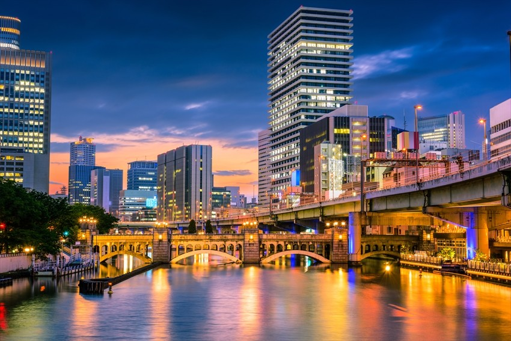

Namba
Namba, situado no coração de Osaka, é um distrito dinâmico conhecido por sua vibrante vida noturna, compras e entretenimento. É um dos principais centros comerciais e de transporte da cidade, repleto de complexos de compras como Namba Parks e Shinsaibashi Shopping Arcade. A área é famosa pela sua variedade de restaurantes e izakayas, oferecendo uma autêntica experiência gastronômica de Osaka. Namba também é o lar de Dotonbori, um destino turístico icônico com suas luminosas placas de neon e canais pitorescos. A estação de Namba é um importante hub de transporte, facilitando o acesso a diversas atrações da cidade. Com sua mistura de cultura, comida e diversão, Namba é um destino imperdível para quem visita Osaka.
Onde passear:

Umeda
Umeda, localizado no norte de Osaka, é um vibrante distrito conhecido por sua moderna arquitetura, centros comerciais e diversas opções de entretenimento. Umeda é famosa por seus complexos de compras que oferecem uma ampla gama de lojas de luxo e boutiques elegantes. A área também é um paraíso gastronômico, com uma variedade de restaurantes, cafés e bares para todos os gostos. Entre as atrações icônicas está o Umeda Sky Building, com seu observatório "Floating Garden" que proporciona vistas deslumbrantes da cidade. Além disso, o distrito oferece entretenimento cultural no Umeda Arts Theater e diversão no HEP Five, um shopping com uma roda-gigante vermelha. Com sua combinação de modernidade, compras e gastronomia, Umeda é um destino essencial para qualquer visitante em Osaka.
Onde passear:
Tennoji
Tennoji, situado no sul de Osaka, é um distrito diversificado que combina modernidade com uma rica herança cultural. O bairro é famoso por abrigar o Shitennoji Temple, um dos templos budistas mais antigos do Japão, oferecendo uma visão profunda da história e espiritualidade japonesa. Tennoji também é conhecido por suas opções de compras e entretenimento, com destinos populares como o Abeno Harukas, o edifício mais alto do Japão, que proporciona vistas panorâmicas deslumbrantes da cidade a partir de seu observatório. O Tennoji Park é um grande espaço verde perfeito para passeios relaxantes, e também abriga o Tennoji Zoo e o Osaka City Museum of Fine Arts. O distrito é um paraíso gastronômico, com uma ampla gama de restaurantes e izakayas oferecendo pratos deliciosos. À noite, Tennoji ganha vida com uma animada cena noturna, incluindo bares e pubs movimentados. Com suas diversas atrações e atmosfera acolhedora, Tennoji é um destino imperdível para quem visita Osaka.
Onde passear: